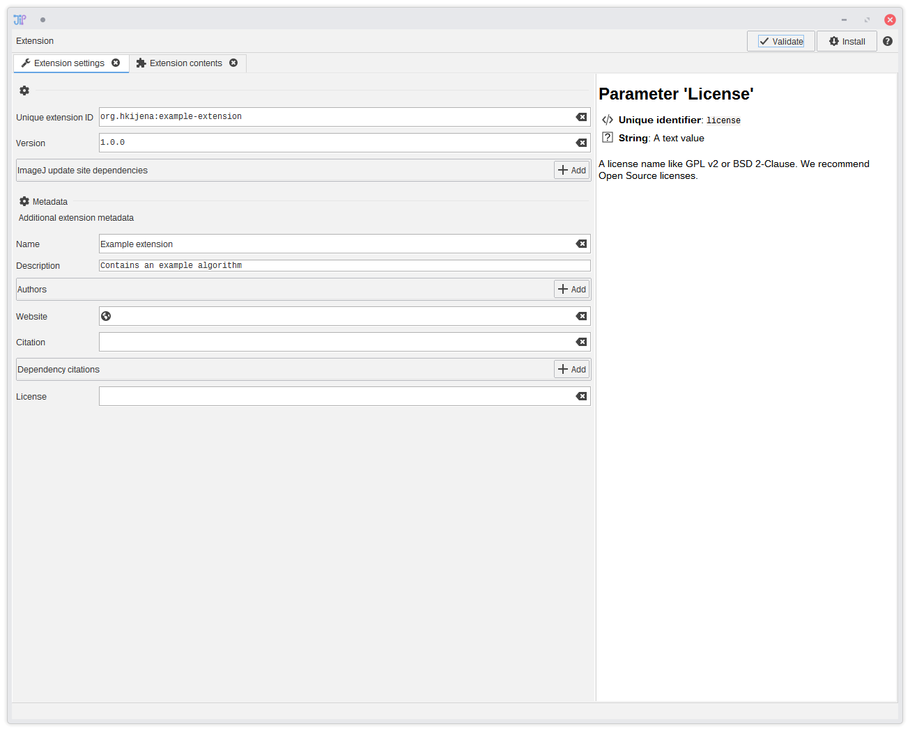
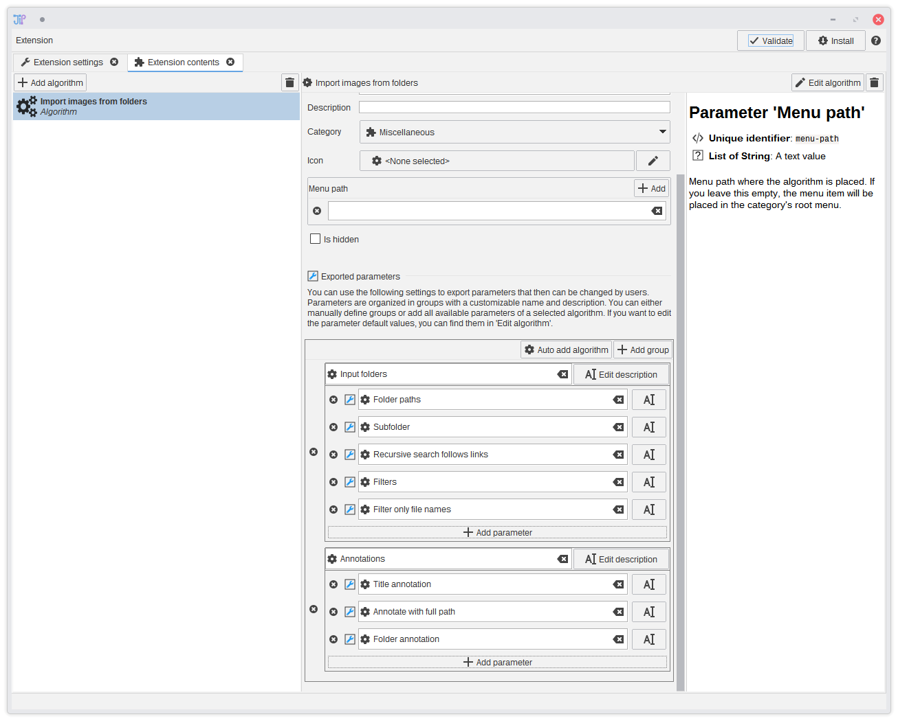
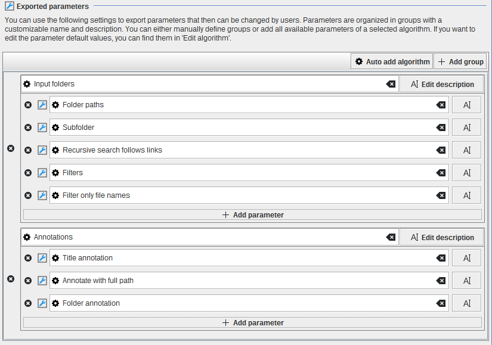

Extension builder
JIPipe allows the creation of extensions that contain additional algorithms without the need for writing Java code. We recommend starting from a functional pipeline project and export the whole pipeline or a part of it into a JSON Extension. Alternatively, you can create custom algorithms from scratch within the extension builder.
If you want a step-by-step guideline on how to create a custom algorithm, please check out our tutorial.
Exporting from an existing pipeline
Within the JIPipe interface, you can find contextual menu items and buttons that allow to generate an exported algorithm.
- To export the whole pipeline as algorithm, select
Project > Export as custom algorithm - To export a graph compartment, select it and click the
 Export button at the top-right corner. Then select As custom algorithm
Export button at the top-right corner. Then select As custom algorithm - To export a selection of nodes, click the Export button at the top-right corner. JIPipe ensures that connections within the selected nodes are exported as well.
- To export a single algorithm, click the Export button at the top-right corner. Please note that if the algorithm is a Group algorithm, the group contents are exported instead of the group iself.
This will open a tab showing a preview of the pipeline. Select  Export to extension to copy the custom algorithm into
a new or existing extension.
Export to extension to copy the custom algorithm into
a new or existing extension.
To open a new extension builder or load a JSON extension, you can use Plugins > New JSON extension ...
The extension builder
The extension builder opens three tabs:
- A short introduction
- A tab that allows you to change the extension settings and metadata
- A tab that lists all algorithms that are part of the extension
Extension settings
All extension metadata can be changed from within this tab. There are only three fields that are mandatory and one where you have to put special care in deciding about the value:
- Unique extension ID is the most important field. It contains a unique identifier that is utilized by JIPipe to figure out project and algorithm dependencies. It must have following format:
[Author]:[Id]where[Author]contains information about the author (ideally in Maven-compatible format) and[Id]is the identifier if this extension within the author’s group. - Version is not used by JIPipe but can be helpful for users to find issues
- Name is displayed in the plugin manager
You can write anything you want into the other metadata fields or leave them out.

Extension contents
This interface allows you to manage the list of algorithms that are contained within the extension. If you want, you can also create algorithms from scratch (although we do not recommend this as you cannot test pipelines within the extension builder). On selecting an algorithm, you can edit its metadata.
- Algorithm ID is the most important field. It uniquely identifies the algorithm within JIPipe. The ID is not namespaced (meaning that it is independent of the extension ID). We recommend to choose a meaningful name that can be easily expanded for specialized algorithms.
- Category determines in which menu the algorithm is shown. Please note that if you select
DataSource, the algorithm will be placed in a menu based on the output data type. ChoosingInternalis not allowed.
You can edit the graph that defines the algorithm’s workload by clicking Edit algorithm. Use this to modify the pipeline to your needs and change parameters. Please note that you cannot test the pipeline.
We recommend to check if you have some parameters that are invalid or dangerous (e.g. file paths that were copied when exportiong from a project). You algorithms should always have sane defaults.

Exporting parameters
By default (this excludes exporting from a Group algorithm) your algorithm will not have any parameters aside of the default ones (name, description, pass-though, and enabled). The extension builder comes with a powerful editor to reference parameters within the algorithm’s graph.
Exported parameters are organized in Groups with each group having a title and optional description. Each group holds a collection of parameter references that can be assigned a custom name and description. Click Add group to create a new empty group or use the Auto add algorithm button to import parameters from a node and automatically create groups.
In a group, you can use the Add parameter button to create a reference.
Hover over the blue wrench icon to display information about the referenced parameter.
Each parameter can only be referenced once. You will get a warning if you have duplicate references. If you ignore the warning, JIPipe will just skip them when creating the parameter UI.
The parameter editor UI implements a sub-set of the parameter reference standard to prevent overloading the UI. You always can change the JSON file to control additional properties like a manual order of the parameter items.
